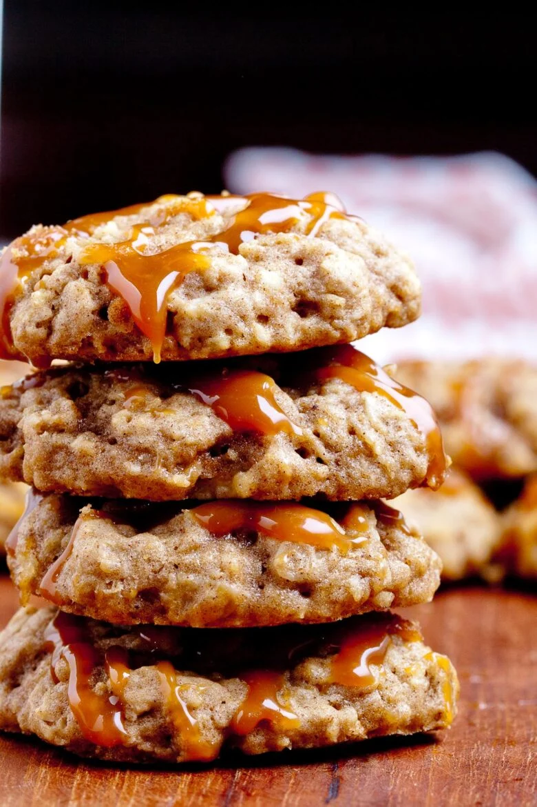

Apple Cookies (With Caramel)

Description
These are the definition of ooey gooey with the delightfully sticky caramel topping the chewy, tender
apple cookies. They make the perfect late night snack or special breakfast treat to start your day.
These are made all the more special when made with apples you picked yourself fresh from the orchard
just like we do every fall.
Ingredients
For the cookie dough
- 10 tbsp. salted butter, softened (not melty)
- 3/4 c. light brown sugar, packed
- 2 tbsp. maple syrup
- 1 egg, large
- 1 egg yolk
- 2 tbsp. whole milk
- 2 tsp. vanilla extract
- 1 1/2 c. all purpose flour
- 3/4 tsp. baking soda
- 1/4 tsp. salt
- 1 1/2 tsp. cinnamon
- 1/4 tsp. nutmeg
- 1 1/2 c. old fashioned rolled oats, dry
- 2 granny smith apples, grated (use large holes) and squeezed dry
For the caramel drizzle
- 1/2 c. soft caramel candies
- 1 tbsp. water
Steps
- Preheat the oven to 325*F, with the oven rack on the middle or lower middle position. Line baking sheets with
parchment paper.
- In the bowl of an electric mixer, beat butter and brown sugar until creamy and fluffy, about 1-2 minutes.
Add maple syrup, egg, egg yolk, milk, and vanilla. Beat on low until fully combined.
- In a separate bowl, whisk together flour, baking soda, salt, cinnamon, and nutmeg. Add rolled oats
to flour mixture and whisk together.
- Using wooden or rubber spatula, fold wet ingredients with dry ingredients. Stir in grated apples
until fully incorporated. If dough is sticky, chill 30 minutes to an hour.
- Form rounded 1 tablespoon balls of dough and place 2 inches apart on parchment lined baking sheets.
- Bake 11-13 minutes, or just until lightly golden; don't overbake. Cookies will set upon cooling.
Transfer warm cookies to wire rack and let cool.
- Place caramels and water in small heavy saucepan. Stir continuously over low heat until melted and
smooth. Let rest a bit until it's no longer too hot to handle. Using a fork or a ziploc baggie with
a tiny hole cut out of the corner, drizzle warm caramel over cooled cookies. Be careful - melted
caramel is hot!